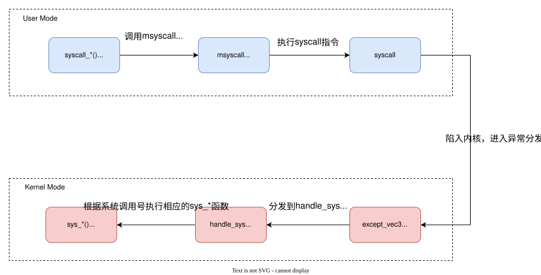
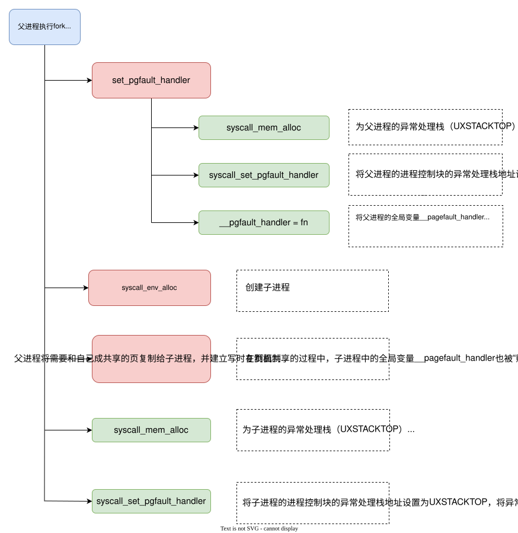
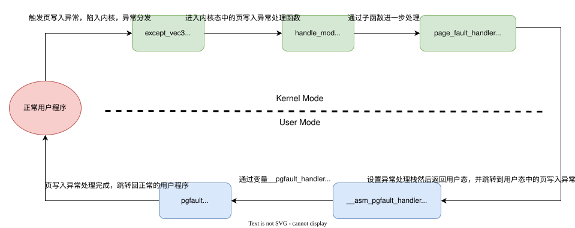

实验思考题
Thinking 4.1
Q： 思考并回答下面的问题：
- 内核在保存现场的时候是如何避免破坏通用寄存器的？
- 系统陷入内核调用后可以直接从当时的$a0-$a3参数寄存器中得到用户调用msyscall留下的信息吗？
- 我们是怎么做到让sys开头的函数“认为”我们提供了和用户调用msyscall时同样的参数的？
- 内核处理系统调用的过程对Trapframe做了哪些更改？这种修改对应的用户态的变化是？
A：
- 内核使用宏函数
SAVE_ALL来保存现场，在该函数的代码实现里，只使用了k0和k1两个通用寄存器来进行操作，从而保证其他通用寄存器的值都不会被改变。 - 可以。因为内核在陷入内核、保存现场的过程中，寄存器$a0-$a3中的值都没有被破坏。
- 用户在调用
msyscall时，传入的参数会被保存在$a0-$a3寄存器和堆栈中。当陷入内核时，$a0-$a3寄存器不会被破坏，而且用户栈中的内容会被原封不动地被拷贝到内核栈（KERNEL_SP）中。因此，sys_*函数可以从寄存器和用户栈获得"用户调用msyscall时传入的参数值"。 - 在处理过程中，将
Trapframe中epc的值进行了一定处理，同时将sys_*函数的返回值存入Trapframe中的v0寄存器中。这种修改保证在进入用户态时，用户程序能够从正确的位置正确运行，同时也使得用户程序从v0寄存器中获得系统调用的返回值。
Thinking 4.2
Q： 思考下面的问题，并对这个问题谈谈你的理解： 请回顾 lib/env.c 文件中 mkenvid() 函数的实现，该函数不会返回 0，请结合系统调用和 IPC 部分的实现 与 envid2env() 函数的行为进行解释。
A： 回顾mkenvid的实现我们会发现，envid的第10位永远是1，即保证了生成的envid一定是非0的——
1 | u_int mkenvid(struct Env *e) { |
所以为什么将0作为一个保留值呢？我们能在envid2env函数中会找到答案——
1 | int envid2env(u_int envid, struct Env **penv, int checkperm) |
可以发现，当envid的值是0时，函数会返回指向当前进程控制块的指针（通过形参penv返回）。当某些系统调用函数需要访问当前进程的进程控制块时，可以直接通过向mkenvid传0来会获得指向当前进程控制块的指针，然后通过指针对进程控制块进行访问。
因此，0作为envid的保留值是为了方便程序直接通过mkenvid函数来访问当前进程的进程控制块。
Thinking 4.3
Q： 思考下面的问题，并对这两个问题谈谈你的理解：
- 子进程完全按照 fork() 之后父进程的代码执行，说明了什么？
- 但是子进程却没有执行 fork() 之前父进程的代码，又说明了什么？
A： 前者说明子进程的代码段和父进程是完全一样的；后者说明子进程的初始上下文位置是在fork函数，也就是说，子进程的初始PC并不是在用户程序的入口，而是在父进程EPC指向的位置。
子进程实际上是在”syscall_env_alloc的执行刚刚从内核态返回用户态“的时候开始运行的，更准确的说，是在msyscal函数返回的位置开始的。
Thinking 4.4
Q： 关于 fork 函数的两个返回值，下面说法正确的是：
- A、fork 在父进程中被调用两次，产生两个返回值
- B、fork 在两个进程中分别被调用一次，产生两个不同的返回值
- C、fork 只在父进程中被调用了一次，在两个进程中各产生一个返回值
- D、fork 只在子进程中被调用了一次，在两个进程中各产生一个返回值
A： 在fork函数中子进程被创建，而当子进程被调度时，恢复的上下文环境仍然是在fork函数中（实际上是syscall_env_alloc函数之后），因此fork 在两个进程中分别被调用一次。此外，执行完fork函数后，父进程返回的是子进程的envid，子进程返回的是0，因此父子进程的返回值是不同的。综上，答案为B。
Thinking 4.5
Q： 我们并不应该对所有的用户空间页都使用duppage进行映射。那么究竟哪些用户空间页应该映射，哪些不应该呢？ 请结合本章的后续描述、mm/pmap.c 中 mips_vm_init 函数进行的页面映射以及 include/mmu.h 里的内存布局图进行思考。
A： UTOP和TLIM之间储存的是和内核相关的页表信息。在执行env_alloc()函数时，这一部分的映射关系直接从boot_pgdir拷贝到进程页表中，因此不需要进行映射。
UTOP和USTACKTOP之间是异常处理栈（user exception stack）和无效内存（invalid memory），前者是进行异常处理的地方， 后者一般也不会用到，所以父子进程不需要共享这部分的内存，也就不需要进行映射了。
所以，最终需要被映射的页面只有USTACKTOP之下的部分。
Thinking 4.6
Q： 在遍历地址空间存取页表项时你需要使用到vpd和vpt这两个“指针的指针”，请参考 user/entry.S 和 include/mmu.h 中的相关实现，思考并回答这几个问题：
- vpt和vpd的作用是什么？怎样使用它们？
- 从实现的角度谈一下为什么进程能够通过这种方式来存取自身的页表？
- 它们是如何体现自映射设计的？
- 进程能够通过这种方式来修改自己的页表项吗？
A：
vpt和vpd分别是指向用户页表和用户页目录的指针，可以用来对用户页表和页目录进行访问。在使用的时候，以vpt为例，先用*运算符获得页表基地址，然后从要访问的虚拟地址中获得页表项相对基地址的偏移，最后两个相加就得到指向页表项的指针，这样我们就可以通过这个指针来对页表项进行访问。vpd同理。- 在
entry.S中我们可以找到vpt和vpd的定义——可以发现，1
2
3
4
5
6
7.globl vpt
vpt:
.word UVPT
.globl vpd
vpd:
.word (UVPT+(UVPT>>12)*4)vpt和vpd分别指向了两个值——UVPT和(UVPT+(UVPT>>12)*4)，这两个值分别是用户地址空间中页表的首地址和页目录的首地址。所以我们可以直接通过vpt和vpd访问到用户进程页表和页目录。 - 上面说到，
vpd的值是(UVPT+(UVPT>>12)*4)，而这个地址正好在UVPT和UVPT+PDMAP之间，说明页目录被映射到了某一个页表的位置。我们知道，每一个页表都被页目录中的一个页表项所映射。因此"页目录被映射到某一个页表的位置"就意味着，在页目录中一定有一个页表项映射到了页目录本身，即实现了自映射。 - 不能，页表是内核态程序维护的，用户进程只能对页表项其进行访问，而不能对其进行修改。
Thinking 4.7
Q： page_fault_handler 函数中，你可能注意到了一个向异常处理栈复制Trapframe运行现场的过程，请思考并回答这几个问题：
- 这里实现了一个支持类似于“中断重入”的机制，而在什么时候会出现这种“中断重入”？
- 内核为什么需要将异常的现场Trapframe复制到用户空间？
A：
- 当发生缺页中断时如果在发生其他中断（比如时钟中断），就会出现中断重入。
- 因为异常的处理是在用户态进行的，而用户态只能访问用户空间（低2G空间）内的数据，所以需要将现场保存在用户空间。
Thinking 4.8
Q： 到这里我们大概知道了这是一个由用户程序处理并由用户程序自身来恢复运行现场的过程，请思考并回答以下几个问题：
- 在用户态处理页写入异常，相比于在内核态处理有什么优势？
- 从通用寄存器的用途角度讨论，在可能被中断的用户态下进行现场的恢复，要如何做到不破坏现场中的通用寄存器？
A：
- 尽量减少内核出现错误的可能，即使程序崩溃，也不会影响系统的稳定。同时微内核的模式下，用户态进行新页面的分配映射也更加灵活方便。
- 在进入用户态的异常处理程序前，将通用寄存器中的值存储在一个特殊的栈空间——异常处理栈；执行完异常处理程序后，在从异常处理栈恢复到通用寄存器。
Thinking 4.9
Q： 请思考并回答以下几个问题：
- 为什么需要将set_pgfault_handler的调用放置在syscall_env_alloc之前？
- 如果放置在写时复制保护机制完成之后会有怎样的效果？
- 子进程是否需要对在entry.S定义的字__pgfault_handler赋值？
A：
-
其实
set_pgfault_handler并不一定要置在syscall_env_alloc之前， 只要放在“写时复制机制建立”之前即可。理由如下——
我们知道，在子进程真正运行之前，父进程会将需要与子进程共享的页面共享给子进程，并同时设置写时复制机制。在这个过程中，父进程数据段里的全局变量也就变成了子进程的全局变量，因此只要在此之前父进程的__pgfault_handler已经被赋值过，那么设置完写时复制机制之后，子进程中__pgfault_handler的值就同样被"赋值"了（和父进程保持一致）
因此，set_pgfault_handler必须在”写时复制机制“完成之前。set_pgfault_handler无论是放syscall_env_alloc之前还是之后，其实都没有问题。
但是如果非要问为什么”set_pgfault_handler的调用放置在syscall_env_alloc之前“，大概是因为，这样可以节省子进程的运行时间，因为子进程是在"syscall_env_alloc的执行刚刚从内核态返回用户态"的时候开始运行的。 -
通过上面的解释可以知道，如果将
set_pgfault_handler放置在写时复制保护机制完成之后，那么子进程中的全局变量__pgfault_handler就不会被赋值，那么页写入异常处理机制也就无法被建立起来。 -
不需要，因为父进程已经通过
set_pgfault_handler函数将__pgfault_handler赋值为pgfault的函数地址了，并且在写时复制机制建立时将数据段里的全局变量都"复制"到了子进程的数据段（包括__pgfault_handler），因此子进程不需要再对其进行赋值。
实验难点图示
本次实验实验主要包含以下两个难点——
- 系统调用的处理流程
- 页写入异常处理机制的建立
- 页写入异常处理流程
系统调用的处理流程
系统调用的处理流程和时钟中断的处理流程相似：用户使用系统调用后，CPU进入内核态，并通过异常分发程序的分发进入到了异常服务函数handle_sys。然后，handle_sys函数根据传入的系统调用号跳转到具体的处理函数sys_*。经过一系列处理，最后返回用户态。
整个流程如下图所示——

页写入异常处理机制的建立
为建立起页写入异常处理机制，我们需要完成以下三个任务——
- 为进程的异常处理栈分配物理页面
- 将进程控制块的异常处理栈地址设置为
UXSTACKTOP，将异常处理函数地址设置为__asm_pgfault_handle - 将全局变量
__pgfault_handler赋值为pgfault函数的地址
因为父子进程都需要建立页写入异常处理机制，所以两者都需要完成上述的三个任务，即总共有6个任务。而这6个任务都由父进程通过fork函数完成的，具体过程如下——

页写入异常处理流程
建立起页写入异常处理机制后，我们的操作系统就有了处理该异常的能力。每当写入PTE_COW为1的页面时，页写入异常就会被触发，处理流程如下所示——

体会与感想
个人感觉这次实验的难度确实比Lab3高了很多，主要有两方面原因——一方面，fork函数本身就不太好理解，需要同时考虑父子进程的行为逻辑；另一方面，本次填写的十几个函数彼此密切相关，无论哪一个出现了问题都会导致评测出锅，所以定位bug简直就是大海捞针。虽然debug很痛苦，但是在这个过程中我又将代码重读了很多遍，对代码理解也更加深刻了。
最后，我还要在此感谢王廉杰学长，他帮我纠正了代码理解上的诸多错误，没有他的指导我也不可能这么顺利的完成Lab4的任务，再次表示感谢！！！
If you like this blog or find it useful for you, you are welcome to comment on it. You are also welcome to share this blog, so that more people can participate in it. If the images used in the blog infringe your copyright, please contact the author to delete them. Thank you !